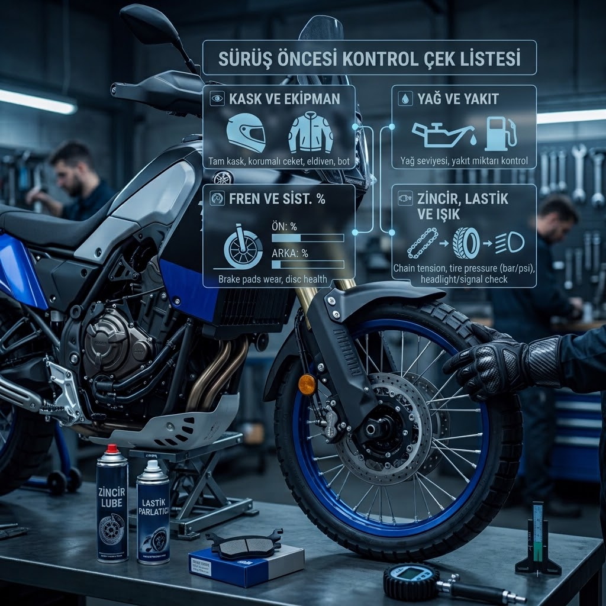
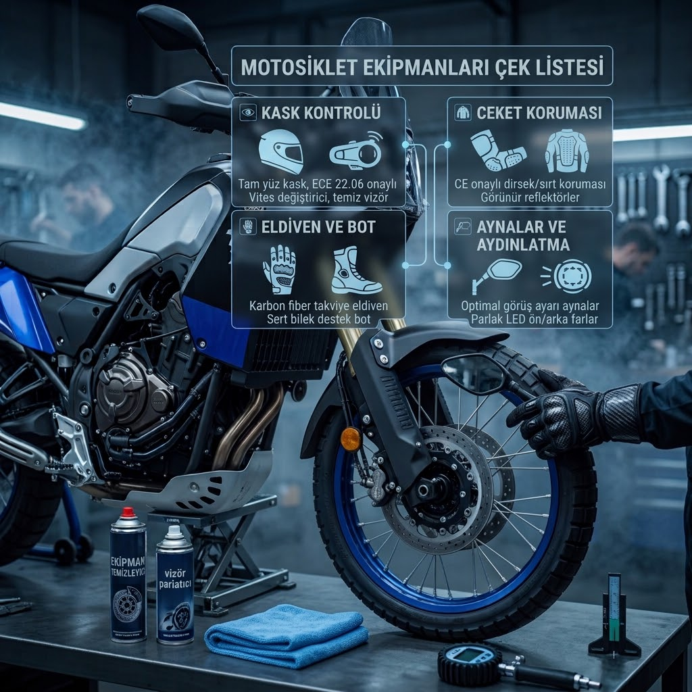
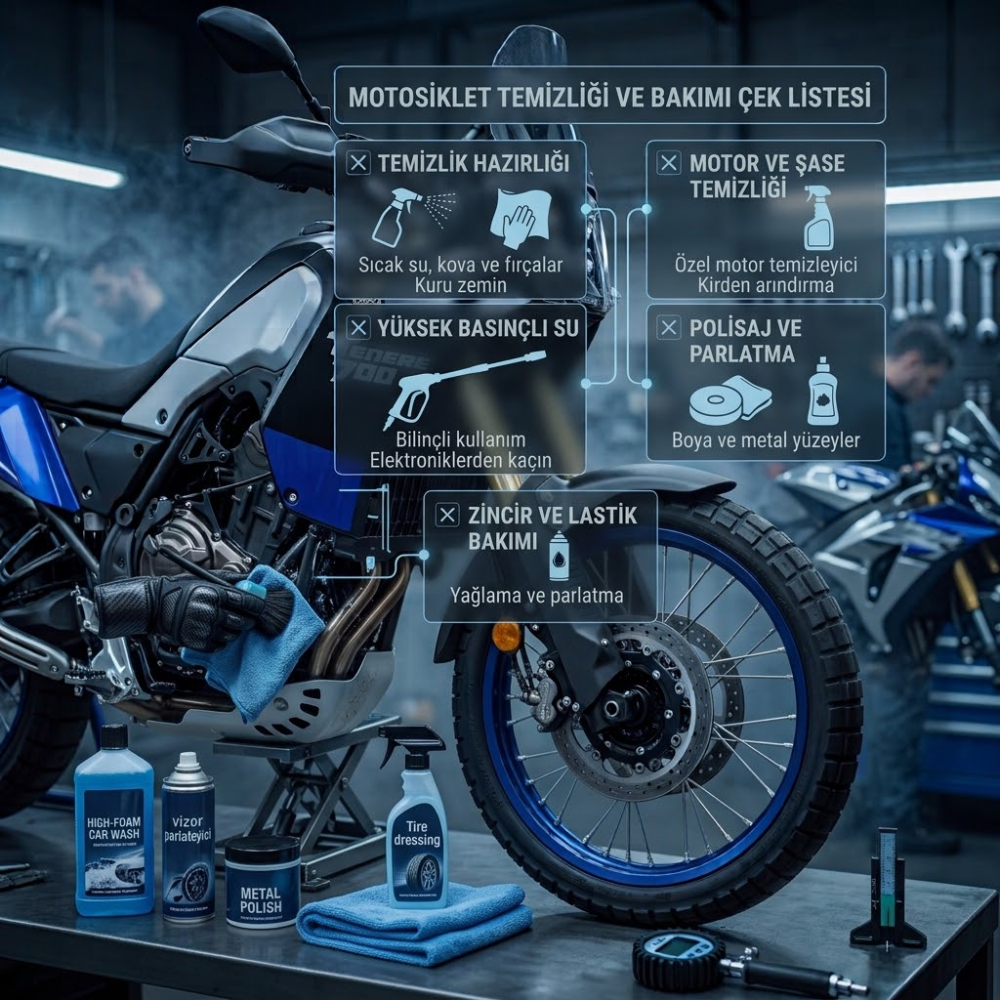
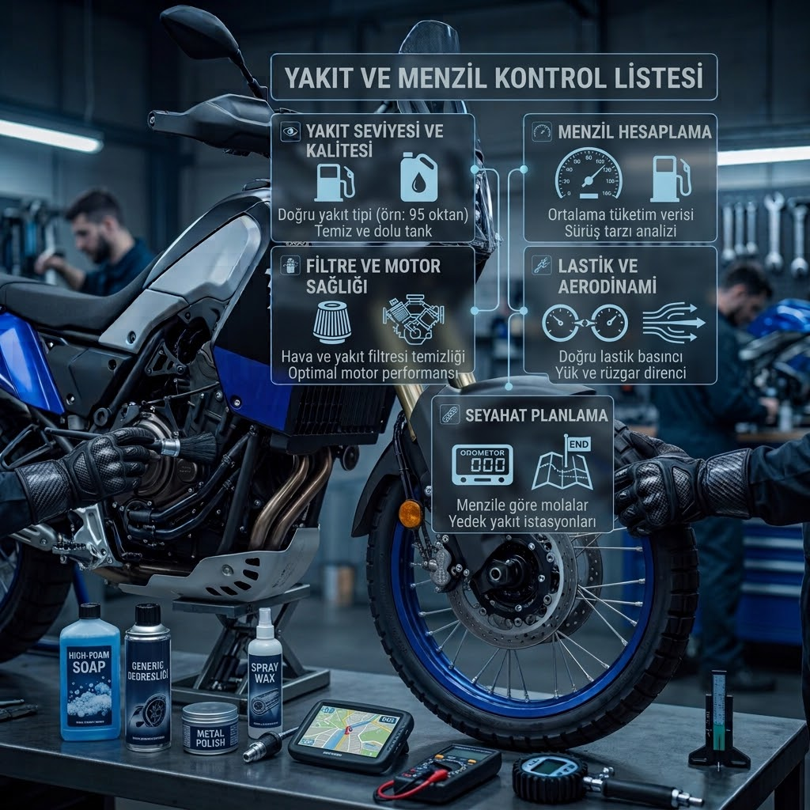
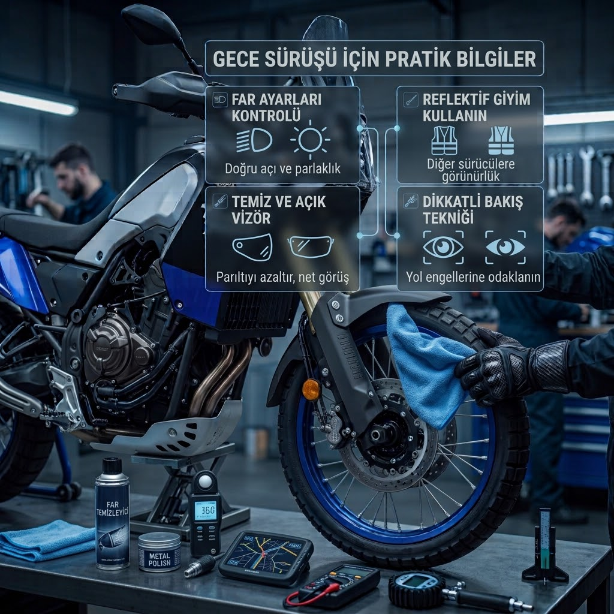
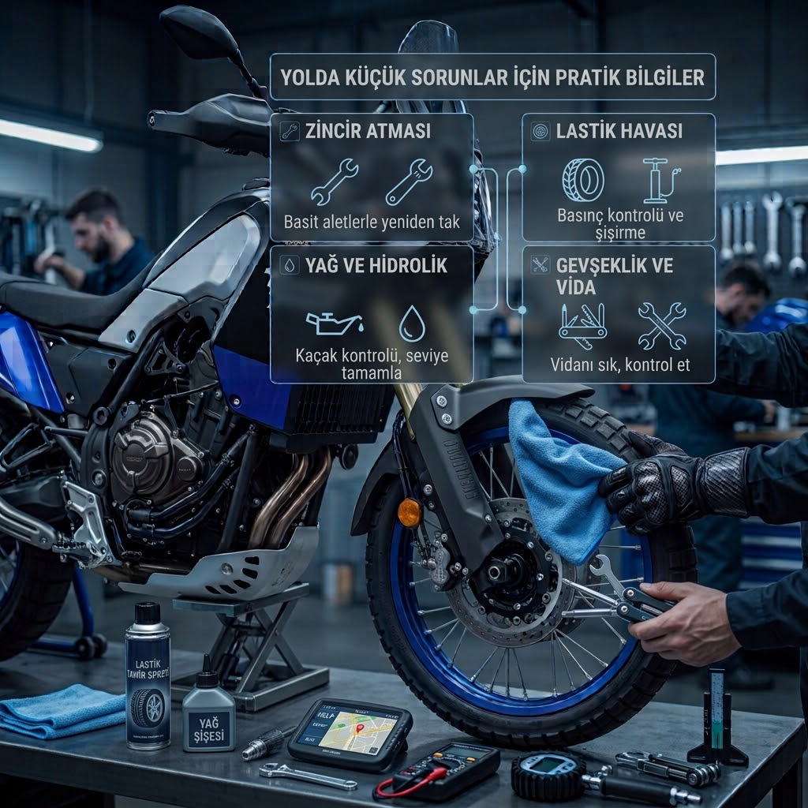

Pratik Bilgiler

Sürüş Öncesi Kontrol
Yola çıkmadan önce motosikletini hızlı ve doğru şekilde kontrol etmek için bilmen gerekenler.
Rehberi Gör
Motosiklet Ekipmanları
Kasktan eldivene, monttan botlara kadar temel motosiklet ekipmanlarını tanı.
Rehberi Gör
Motosiklet Temizliği
Motosikletini temizlerken dikkat etmen gereken noktaları ve doğru temizlik adımlarını öğren.
Rehberi Gör
Yakıt ve Menzil
Yakıt tüketimini takip et, yaklaşık menzilini hesapla ve uzun yolda daha hazırlıklı ol.
Rehberi Gör
Gece Sürüşü
Gece motosiklet kullanırken görüş, görünürlük ve yol koşulları açısından dikkat edilmesi gerekenler.
Rehberi Gör
Yolda Küçük Sorunlar
Yolda karşılaşabileceğin küçük problemlerde yapabileceğin temel kontroller ve pratik çözümler.
Rehberi Gör